Paulo Ambrosi
Analista de Sistemas. Construo, customizo e mantenho sistemasambientes virtuais de aprendizagemrev — do plugin Moodle ao sistema de autoria que organiza a produção de um curso inteiro.
Currículo
Analista de Sistemas com mais de 12 anos de experiência em desenvolvimento web, ambientes virtuais de aprendizagem e tecnologias educacionais. Atuo no SENAI CETIND desenvolvendo sistemas em PHP, JavaScript, MySQL e APIs REST, além da administração, customização e evolução de plataformas Moodle.
Tenho experiência na criação de jogos e simuladores educacionais com Adobe Animate, HTML5 e JavaScript, bem como na implementação de ambientes de aprendizagem para instituições nacionais e internacionais, incluindo projetos desenvolvidos em parceria com a OEI, universidades e órgãos governamentais.
Tags
04 · Projeto em destaque
FLOW
Sistema que acompanha uma aula EAD do plano de aula à entrega final, passando por conteúdo, revisão, design educacional, ilustração, diagramação, audiovisual e desenvolvimento. Exporta em SCORM, PDF, DOCX e IDML.
Dentro dele, a IA escreveIA propõe e uma pessoa deciderev.
Ver o case completo →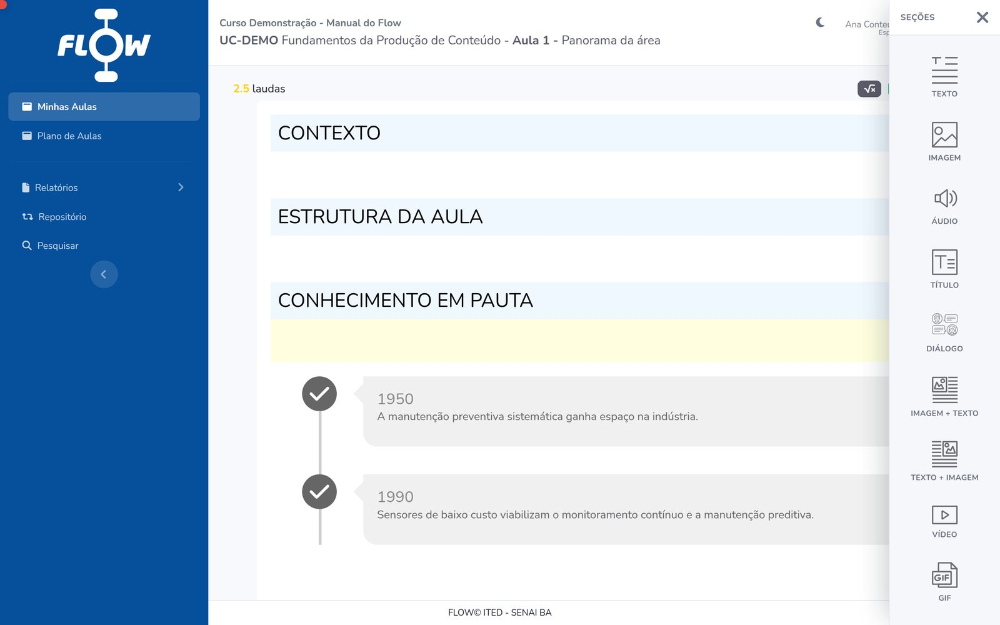
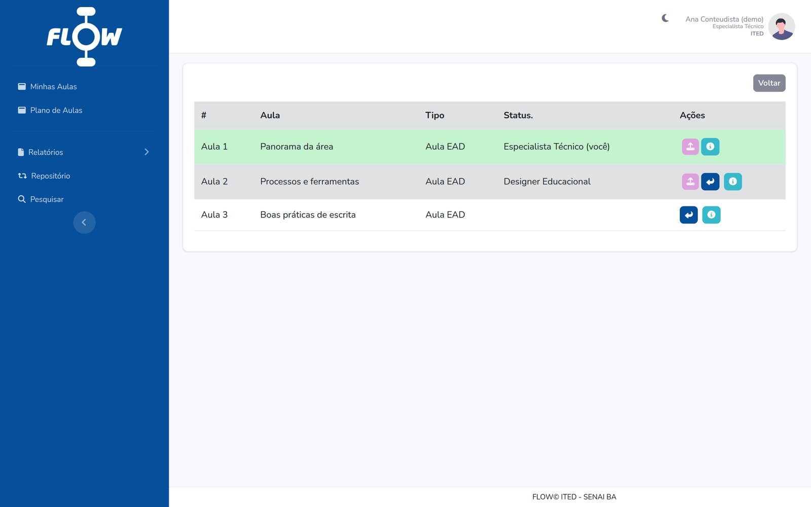
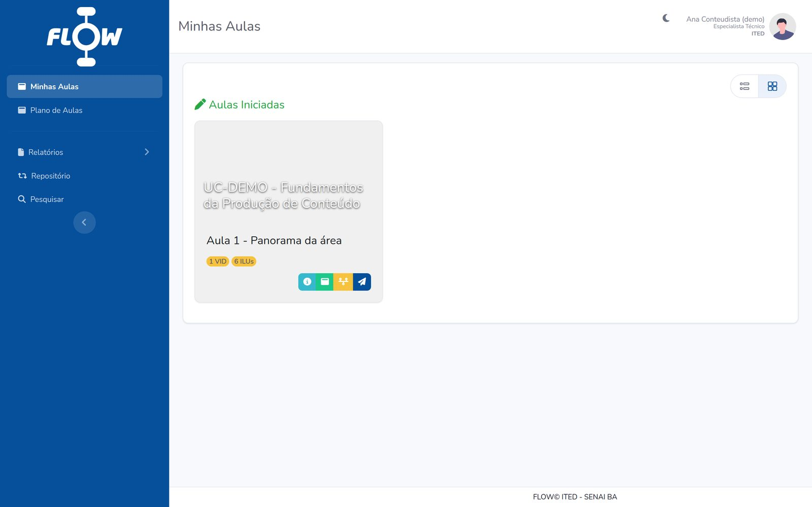
FLOW, ambiente de demonstração. SENAI Bahia.
05 · Projeto
SENAI Class
Ferramenta para o professor levar atividade gamificada para a sala: quiz, situação de aprendizagem e aula interativa, com ranking e histórico. A IA escreve a primeira versão; quem decide é o professor.
Ver o trabalho com IA →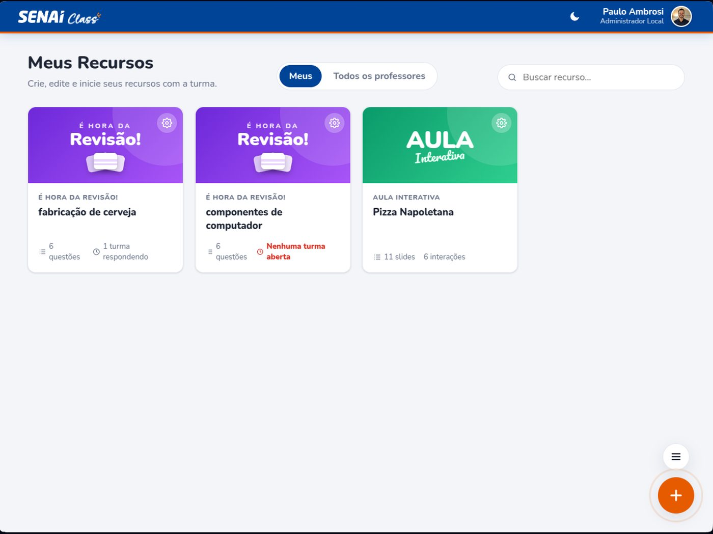
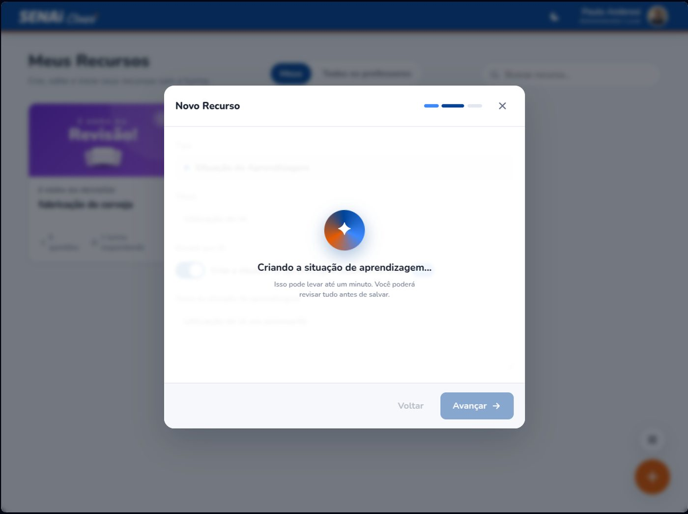
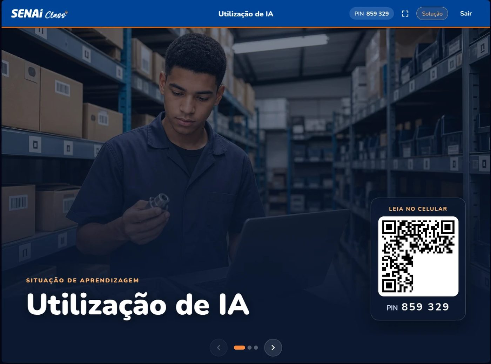
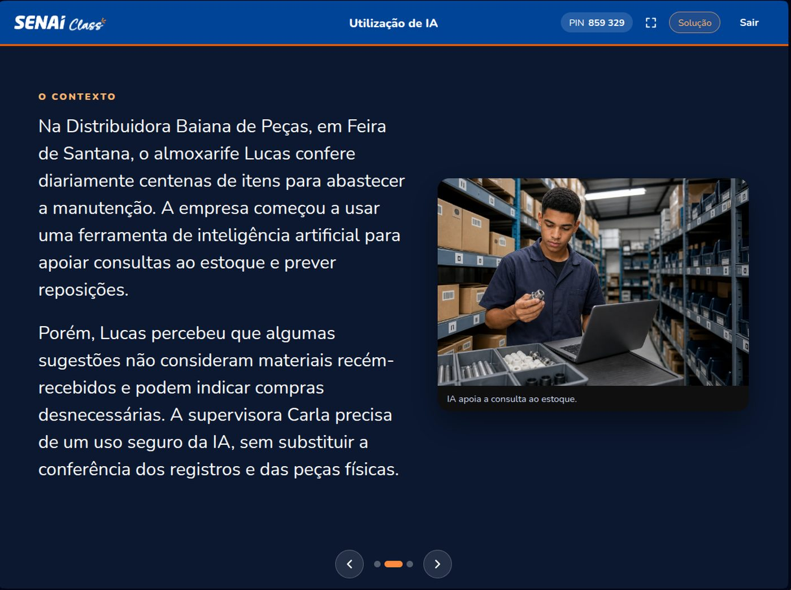
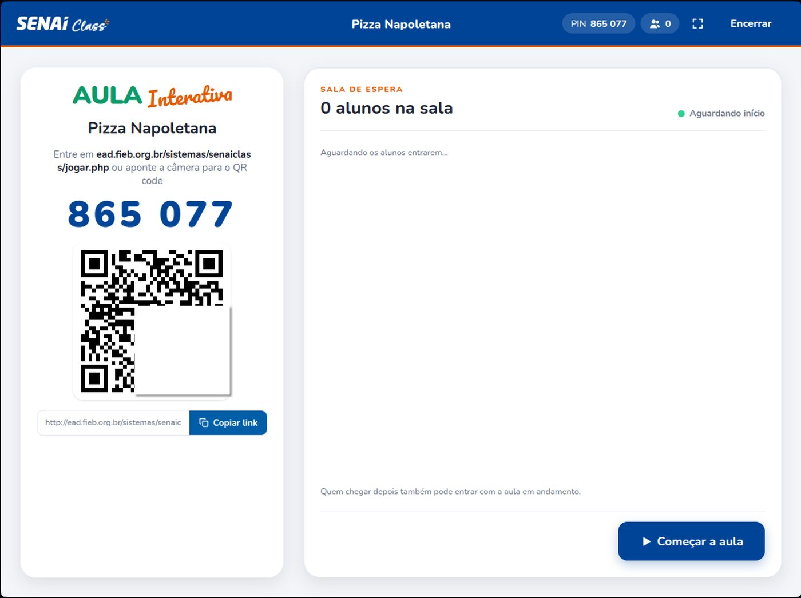
Ambientes Moodle
AVA do SENAI Bahia
Oferta EAD do SENAI Bahia, desde 2015
- O Moodle onde os cursos a distância do SENAI Bahia são ofertados. Em operação desde 2015, hoje com 145 mil alunos cadastrados e centenas de cursos no ar. É também o destino dos pacotes SCORM que saem do FLOW.
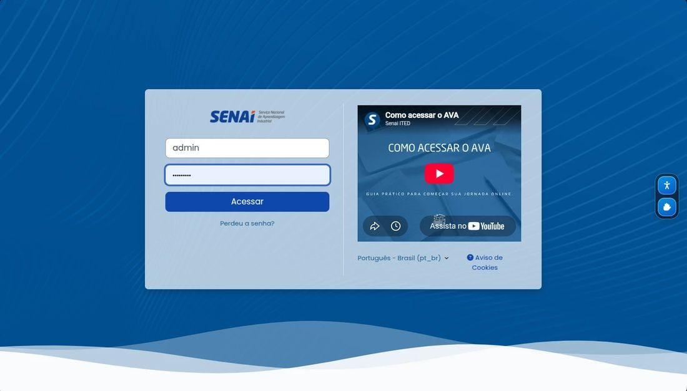
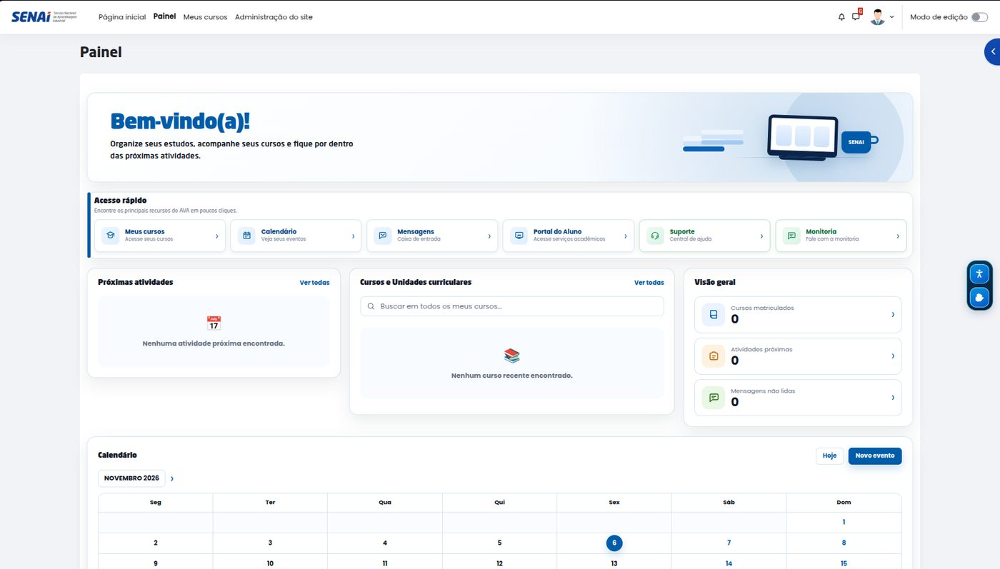
ObsPLE-PL2
Observatório de Português como Língua Estrangeira
- Ambiente Virtual de Aprendizagem para uma rede internacional vinculada ao CNPq e ao IILP/CPLP. Personalização do Moodle, diagramação dos conteúdos e melhorias de navegação. Três edições do curso, 1.058 alunos.
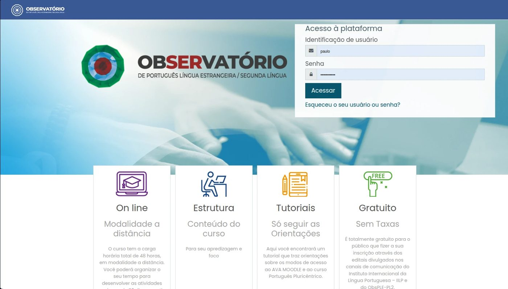
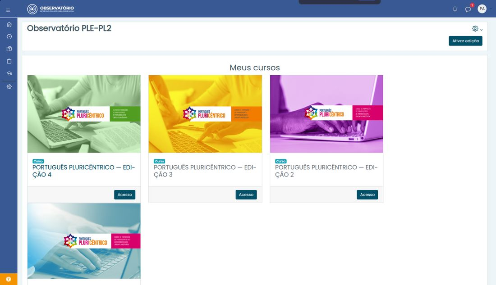
Projeto (Re)Integro
Ministério da Justiça e OEI
- AVA para ações de formação e reintegração social. Construção e configuração da plataforma Moodle e organização do ambiente educacional.
Cruzando Fronteiras
Universidade Federal do Rio Grande do Sul
- AVA para o projeto Cruzando Fronteiras. Construção, customização e configuração do Moodle para oferta de cursos e acompanhamento dos participantes.
Experiência
Analista de Sistemas
SENAI CETIND · Lauro de Freitas, BA
- Desenvolvimento e manutenção de sistemas em PHP, JavaScript, MySQL e APIs REST.
- Administração, customização e suporte de ambientes Moodle.
- Criação de soluções educacionais digitais para cursos e treinamentos.
- Integração de tecnologias voltadas para educação profissional e corporativa.
Programador
SENAI CETIND
- Desenvolvimento de jogos e simuladores educacionais com Adobe Animate, HTML5 e JavaScript.
- Criação, implementação e manutenção de ambientes Moodle.
- Desenvolvimento e manutenção de sistemas corporativos em PHP e JavaScript.
Estagiário
SENAI CETIND
08 · Contato
Disponível para projetos de Moodle, ambientes virtuais de aprendizagem e desenvolvimento web educacional. O caminho mais curto é ambrosipaulo@gmail.com.
© 2026 Paulo Ambrosi · Composto em Fraunces e Inter